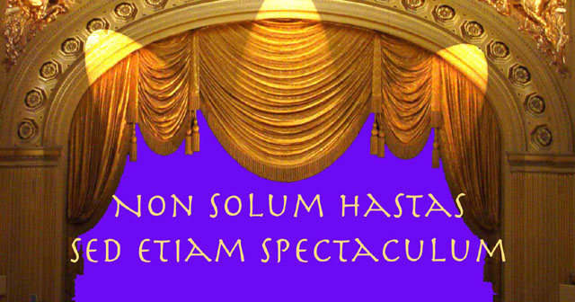

SpearheadNews.com
Super News
2007

Casting News
Events
Rehearsal Schedules
Interviews
Photos
Reviews
More Fun Stuff!
The
Super Handbook
San
Francisco Opera
Links
Classifieds
Contacts
Archives
Members Only
Spearheadnews.com is not officially affiliated with any
performing arts organization.
All photographs remain the property of their copyright holders.
©2007
SpearheadNews
All Rights Reserved

Non Solum Hastas Sed Etiam Spectaculum
The
unofficial motto of the San Francisco opera Supernumeraries roughly translates
to “We not only carry the spears but also the show."
A Supernumerary or "Super" (sometimes called a "spearcarrier")
is a nonsinging, nonspeaking extra (actor) typically in an opera, but
also in ballet and theatrical productions. The San Francisco Opera has
long had a very dedicated band of Supers who have established a good reputation
with directors and who have a strong sense of community among themselves.
We have a Super Committee that
works with the Opera House Management (here is their Mission
Statement). Some Supers on the current roster have been supering since
the Sixties and others started only yesterday. We also assist the Production
Staff by posting current scheduling and casting information on this site.
If you are interested in becoming a Super at the San Francisco Opera,
please review of the application process.
There are also many other ways you can help the Opera by volunteering
for lightwalking or participating in one
of our fundraising activities.
Andrew Korniej, a long-time Super, would be happy to answer any further questions.